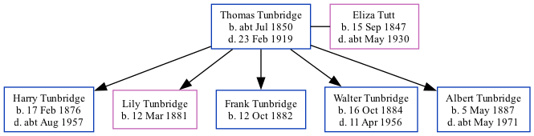

Thomas Tunbridge cJul 1850 - 1919
[ Home ] | [ Calendar ] | [ Surnames Index ] | [ Family History ]Thomas Tunbridge, the husband of Eliza Tutt (the great-great-aunt of Nigel Horne), was born in Dover, Kent, England c. Jul 18501,2,3,4,5,6,7,8 and married Eliza (a general servant with whom he had 5 children: Harry, Lily, Frank, Walter and Albert) in St Lawrence, Thanet, Kent, England on Aug 22, 187410 (Jul/Aug/Sep).
Thomas spent all of his life in Kent, England. Throughout his life, he lived in several places around the county: in Hougham, Kent, England in 18711 and in 18812; at 9 Elms Cottage in Hougham on Apr 5, 189111; and at 5 Eaton Road in Dover on Mar 31, 190112 and on Apr 2, 191113.
He died on Feb 23, 1919 at 31 Church Road, Dover, Kent, England9.
Children
- Harry was born on Feb 17, 1876
- Lily was born on Mar 12, 1881
- Frank was born on Oct 12, 1882
- Walter was born on Oct 16, 1884
- Albert was born on May 5, 1887
Citations
- 1871 England Census Online publication - Provo, UT, USA: The Generations Network, Inc., 2004.Original data - Census Returns of England and Wales, 1871. Kew, Surrey, England: The National Archives of the UK (TNA): Public Record Office (PRO), 1871. Data imaged from the National (Relation to Head of House: Boarder)
- 1881 England Census Online publication - Provo, UT, USA: The Generations Network, Inc., 2004. 1881 British Isles Census Index provided by The Church of Jesus Christ of Latter-day Saints © Copyright 1999 Intellectual Reserve, Inc. All rights reserved. All use is subject to the (Relation to Head of House: HeadMarital Status: Married)
- 1891 England Census Online publication - Provo, UT, USA: The Generations Network, Inc., 2005.Original data - Census Returns of England and Wales, 1891. Kew, Surrey, England: The National Archives of the UK (TNA): Public Record Office (PRO), 1891. Data imaged from The National
- 1901 England Census Online publication - Provo, UT, USA: The Generations Network, Inc., 2005.Original data - Census Returns of England and Wales, 1901. Kew, Surrey, England: The National Archives of the UK (TNA): Public Record Office (PRO), 1901. Data imaged from the National
- 1911 England Census Online publication - Provo, UT, USA: Ancestry.com Operations, Inc., 2011.Original data - Census Returns of England and Wales, 1911. Kew, Surrey, England: The National Archives of the UK (TNA), 1911. Data imaged from the National Archives, London, England.
- England & Wales births 1837-2006 - Findmypast
- England & Wales, FreeBMD Birth Index, 1837-1915 Online publication - Provo, UT, USA: The Generations Network, Inc., 2006.Original data - General Register Office. England and Wales Civil Registration Indexes. London, England: General Register Office. © Crown copyright. Published by permission of the Cont
- Kent Baptisms - Findmypast
- England & Wales deaths 1837-2007 - Findmypast
- 1911 England Census Online publication - Provo, UT, USA: Ancestry.com Operations, Inc., 2011.Original data - Census Returns of England and Wales, 1911. Kew, Surrey, England: The National Archives of the UK (TNA), 1911. Data imaged from the National Archives, London, England.
- 1891 England, Wales & Scotland Census - Findmypast (was age 41 and the head of the household)
- 1901 England, Wales & Scotland Census - Findmypast (was age 50 and the head of the household)
- 1911 Census for England & Wales - Findmypast (was age 61 and the head of the household)
Media
Dover Express 28 Feb 1919

1891 England, Wales & Scotland Census - GBC/1891/0005982757
1911 Census for England & Wales - GBC/1911/RG14/04600/0325/1
England & Wales deaths 1837-2007 - BMD/D/1919/1/AZ/001387/102
England & Wales births 1837-2006 - BMD/B/1850/3/SZ/000496/038
Kent Baptisms - GBPRS/B/82643408/1
Family Tree
Generated by ged2site. Last updated on Nov 13, 2024